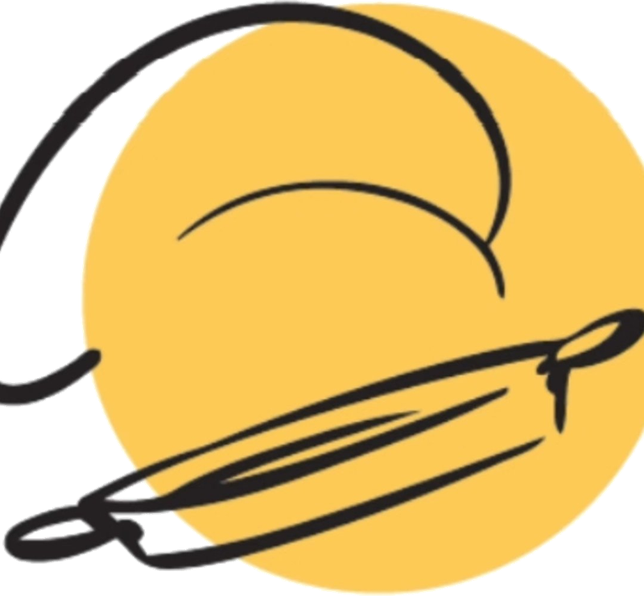
De 100 a 10.000 raciones, cocinadas en la plaza, delante de los vecinos.
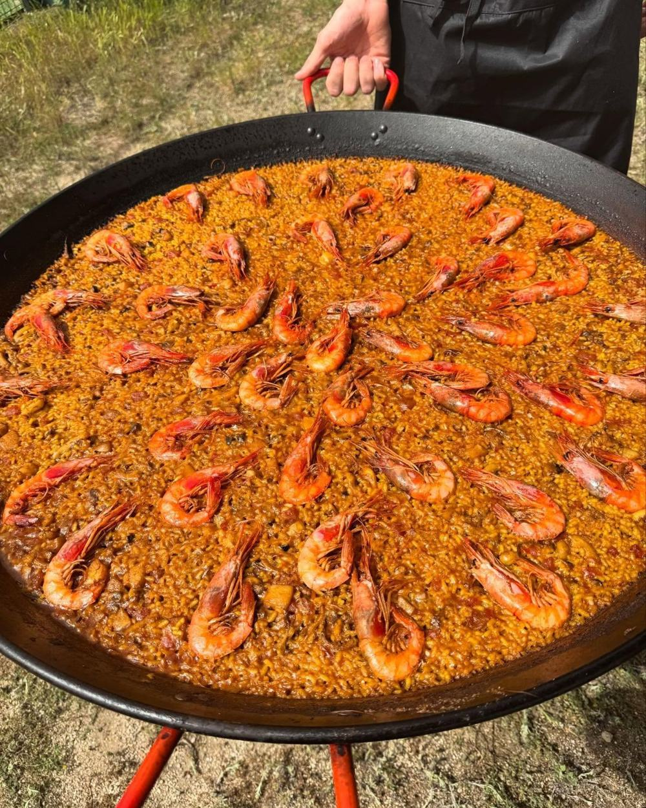
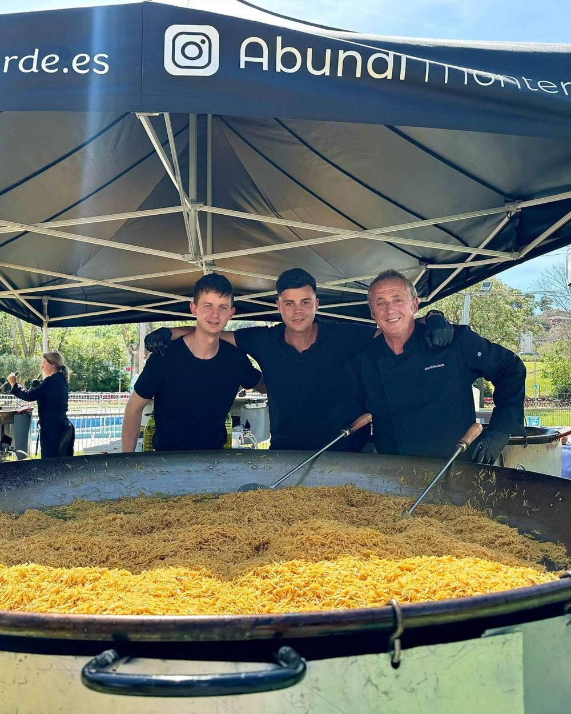
Abundi Monterde lleva tres décadas cocinando paellas gigantes en fiestas patronales, comidas populares y grandes eventos.
Cocinamos en el lugar de la fiesta, a la vista de todos, y con el mismo cuidado para cien personas que para diez mil. Usamos ingredientes frescos, en la cantidad que pide una buena paella.
Filencia S.L., con sede en València, es nuestra delegación en la Comunitat Valenciana. Se encarga de atender a los ayuntamientos, preparar los presupuestos y facturar.
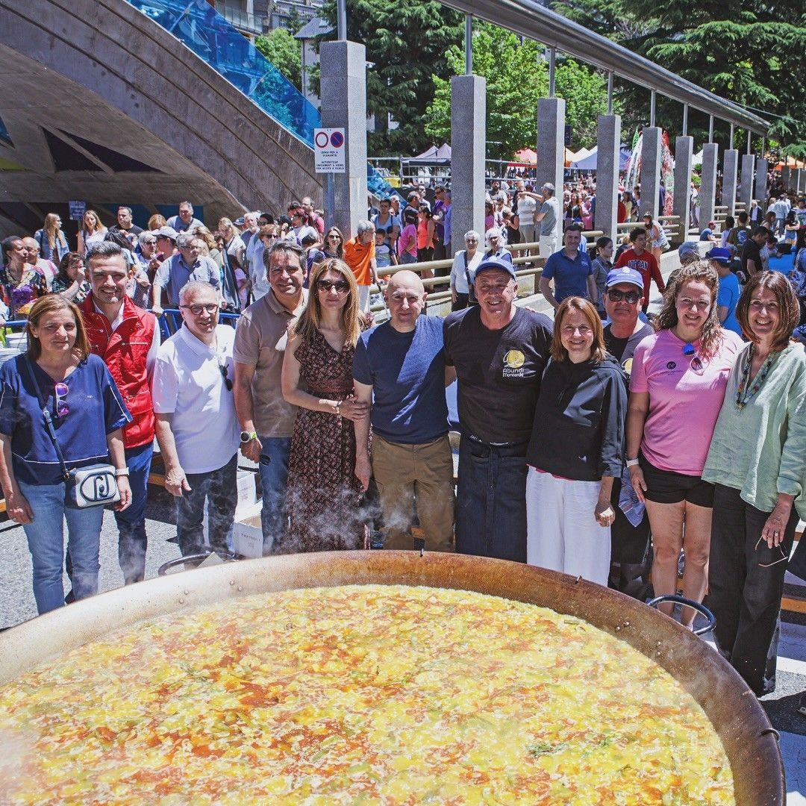
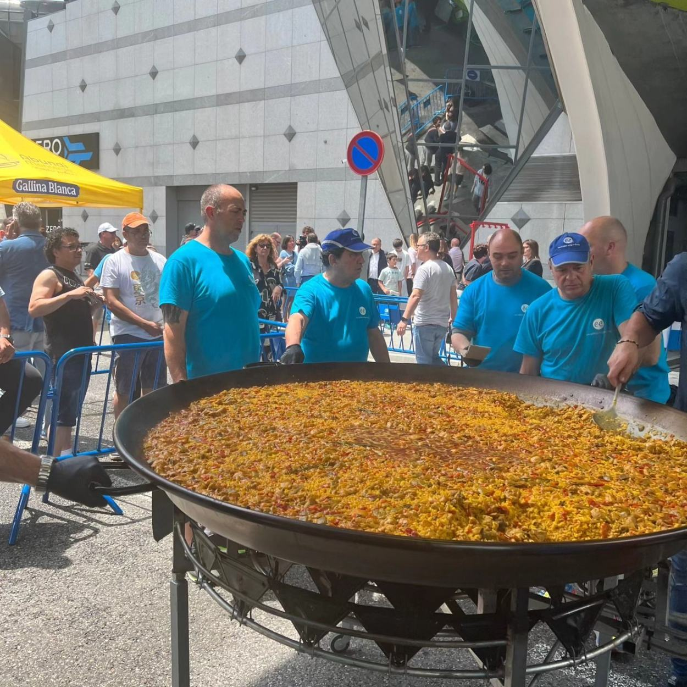
Una comida popular de 100 o 200 personas.
Nueve paellas gigantes en una misma fiesta de pueblo.
Hasta 10.000 comensales en un solo evento.
Paella valenciana, de marisco, fideuà y arroces de temporada. Ingredientes frescos, en la cantidad justa y cocinados al momento, para que los vecinos y vecinas queden plenamente satisfechos.
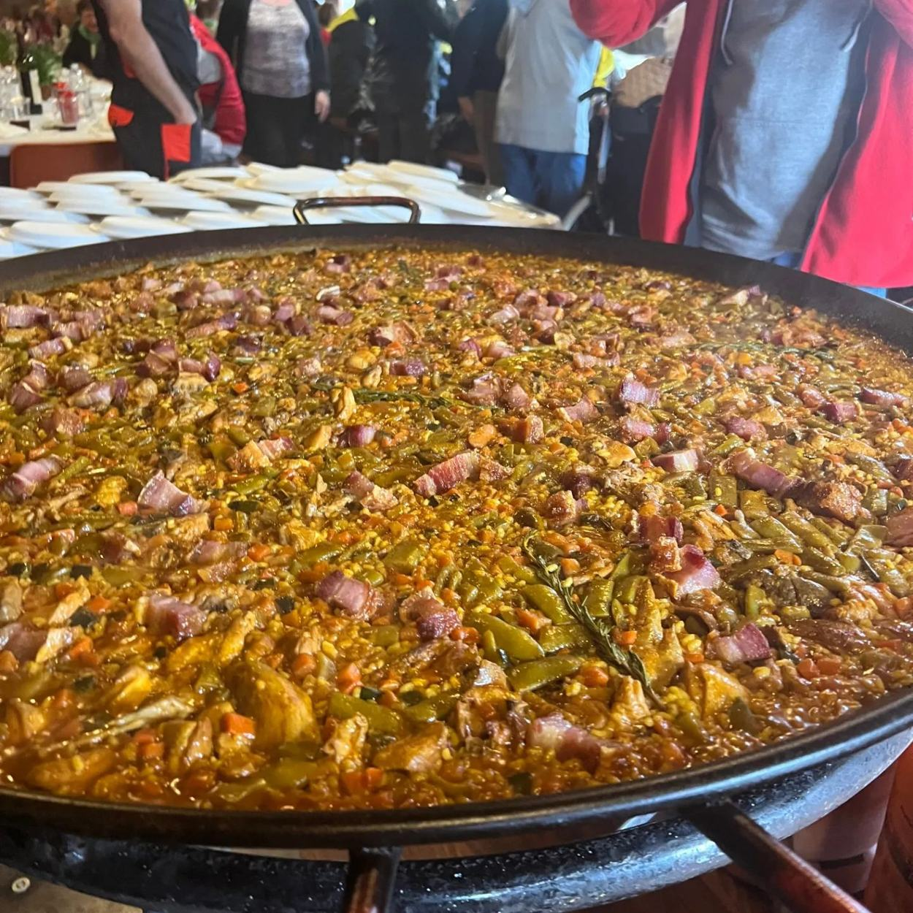
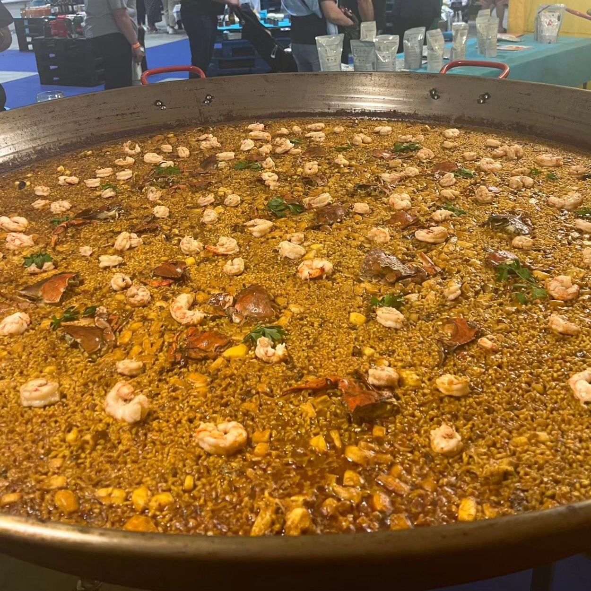
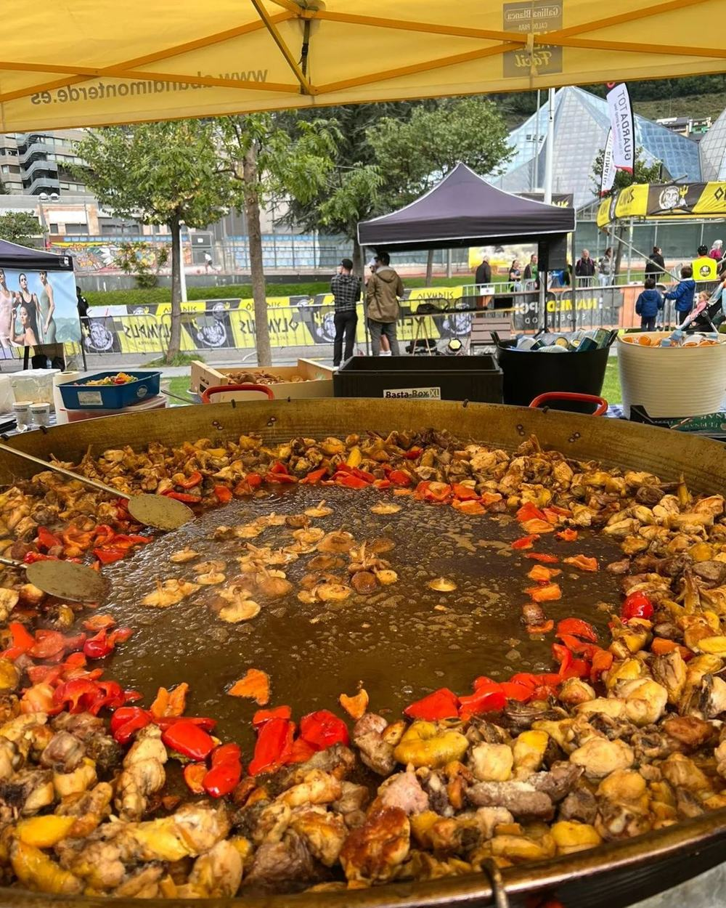
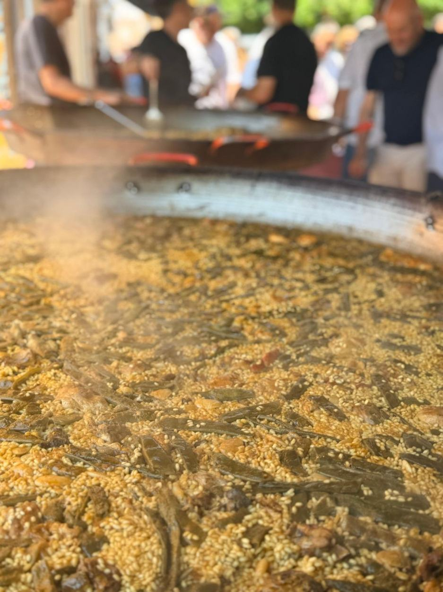
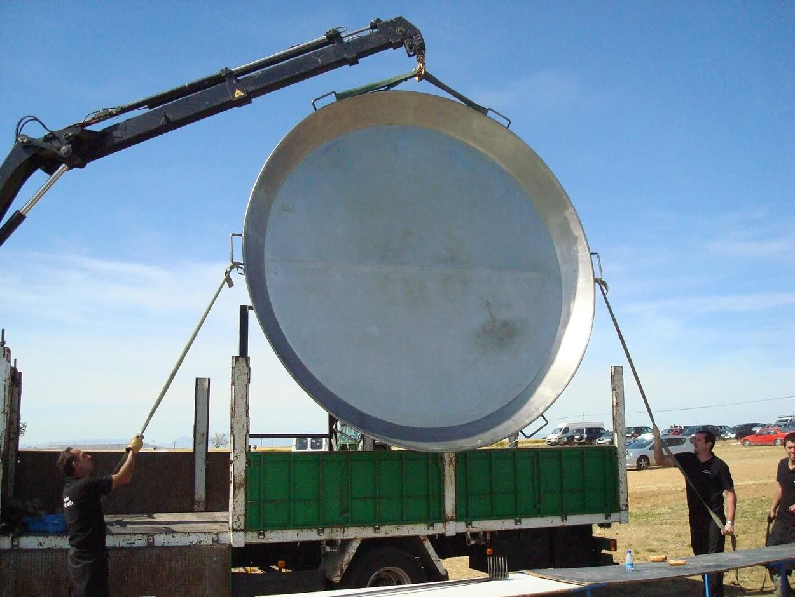
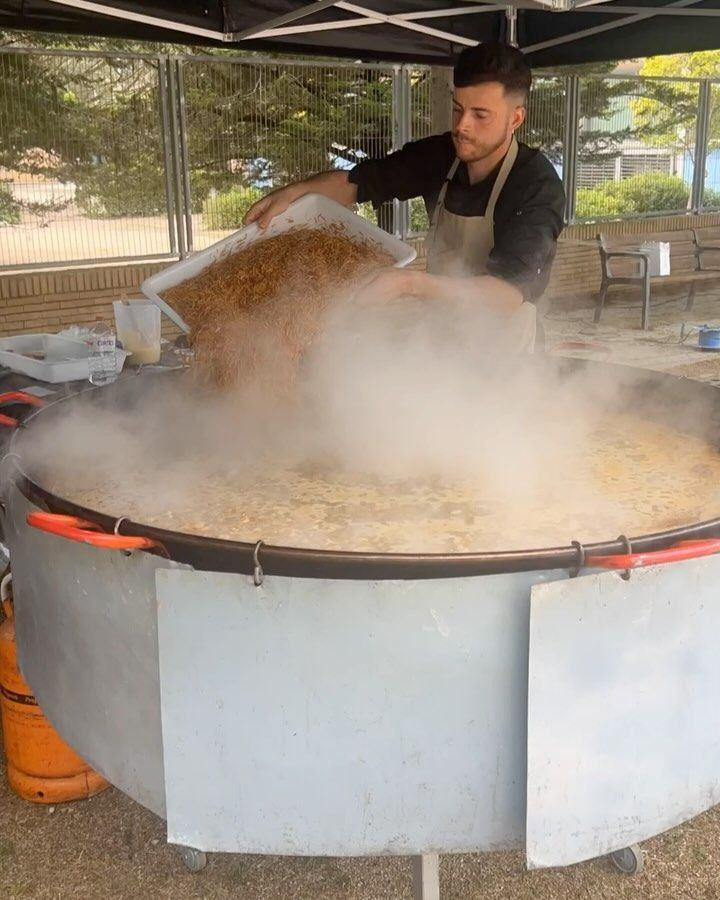
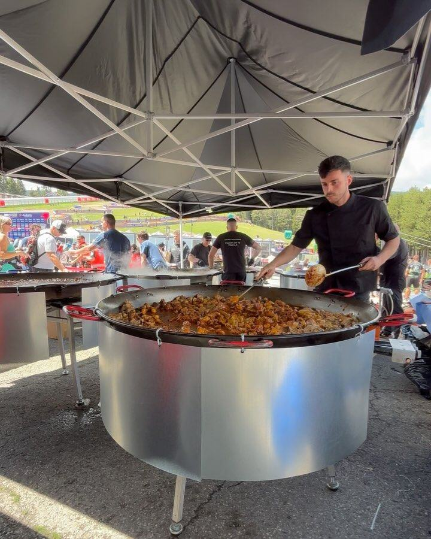
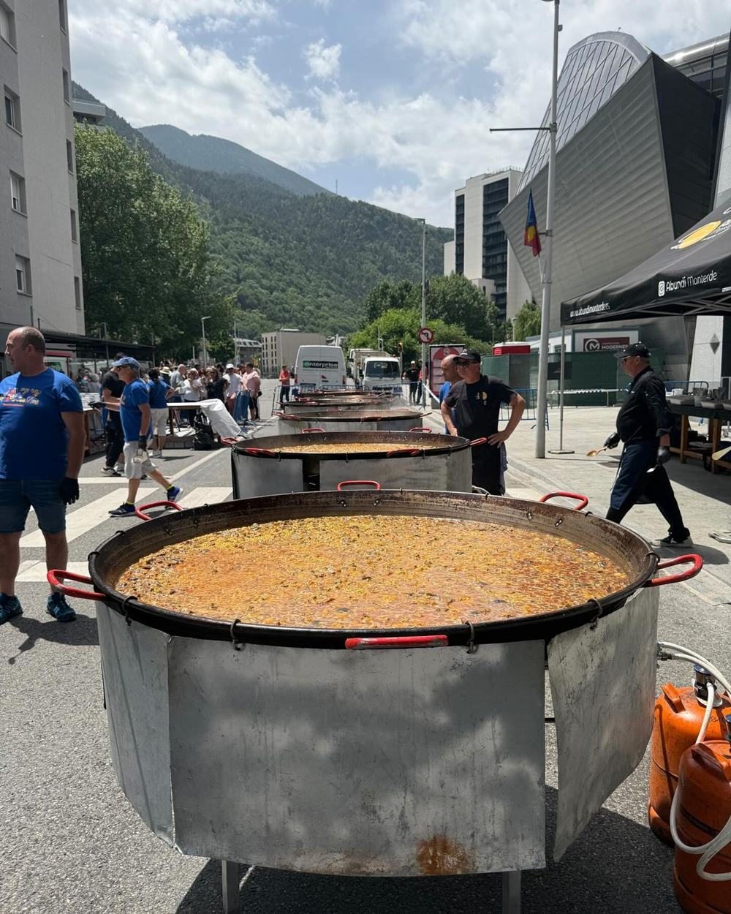
IVA no incluido. El precio depende del número de raciones; díganos la fecha, el lugar y los comensales y les enviamos un presupuesto cerrado.